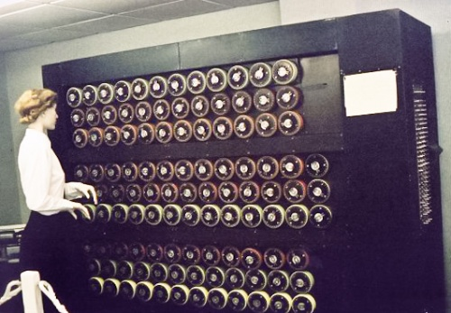

Hasta ahora hemos explorado algunos de los sistemas de cifrado más antiguos y utilizados a lo largo de la historia.
Ahora vamos a profundizar un poco en la máquina de cifrado más famosa de todas. Aunque se mantuvo muchos años en secreto, el cine, la televisión e Internet han hecho que la máquina enigma sea conocida por casi todo el mundo.
Además, su conocimiento, nos pone a las puertas de la criptografía moderna que necesitamos para nuestro reto final.
La máquina enigma
¿Por qué nació Enigma?
Enigma era una máquina de cifrado que se inventó en Alemania en los años 20 del siglo pasado. La usaban las empresas para sus comunicaciones en clave. Pero después, cuando se fue acercando la guerra, hacia 1926, el ejército alemán la modificó y la hizo más compleja. La Enigma militar es la que se conoce como “Enigma”, que es una versión más sofisticada de las Enigmas comerciales.
Enigma tiene un aspecto de máquina de escribir. El usuario teclea un mensaje. Cada vez que se presiona una letra se ilumina una bombilla que no es la misma que la que se ha tecleado. El usuario teclea una “A” y se ilumina la bombilla de la “X”. El soldado que copia el mensaje anota un galimatías, una serie de letras sin sentido. Se transmite por radio y llega a algún otro sitio, como un barco o un submarino. Si se tiene una máquina en el submarino configurada de la misma manera que la máquina de origen, al teclear el galimatías sale el mensaje, el texto original.
¿Cómo funcionaba una máquina Enigma?
¿Código irrompible?
La historia se remonta a los años 30. En Polonia ya sabían que serían invadidos por los alemanes. Un grupo de matemáticos se pusieron entonces a trabajar en la maquina Enigma y, dieron con una forma de romper su código.
La máquina Enigma se usaba de un cierto modo que facilitaba descifrar la clave, porque lo que hacían los alemanes era transmitir grupos de letras iguales. Si encontraban esos grupos en todos los mensajes de un mismo día, podían, con un algoritmo, sacar la clave del día. Eso les valió mientras los alemanes hicieron ese uso de la máquina, pero terminaron por aumentar el número de letras de cada grupo; y en lugar de usar 3 rotores, empezaron a usar 3 de un grupo de 5, lo que daba lugar a un total de 60 combinaciones distintas.

Entonces se pusieron en contacto con los ingleses, que pusieron en marcha un grupo de criptógrafos. Alan Turing era uno de ellos. Colocado al frente del proyecto Banburismus, Turing y su equipo hicieron sesenta “bombas”, que eran las máquinas que simulabanel funcionamiento de Enigma. Mientras los alemanes usaron ese método, los ingleses pudieron ir tras sus pasos. La “bomba” funciona como una exploración de estados: cada una de las 60 la configuraban con los rotores de una determinada manera y se ponían a explorar cada una de las 18 mil millones de configuraciones. Las maquinas Enigma fueron cambiando de forma, de numero de rotores etc. durante la guerra. En particular, la Enigma naval, usada para los submarinos, llegó a tener 4 rotores de un conjunto de 8.
Alan Turing, jefe del grupo del Betchley Park, inventó unas “bombas” más sofisticadas para descifrar unas nuevas Enigmas. Las “bombas” funcionaban con lo que ellos llamaban conjeturas. Sabían que todos los mensajes, o casi todos, terminaban con las palabras “Hi Hitler”, gran error cometido por los almenas. Lo que hacían estas máquinas era ir ensayando configuraciones y las que no eran compatibles con que la última palabra fuera esa, eran descartadas rápidamente, con lo que conservaban solo aquellas que encajasen. En definitiva, era una “búsqueda a ciegas” hecha muy deprisa con una máquina electromecánica.
Entre tantos hombres, una mujer.
Entre esos matemáticos ingleses había una mujer, Joan Clarke. ¿Cuál fue su papel? ¿Ha sido maltratada por la historia? Cuando Turing llegó al grupo de Betchley Park, no había matemáticos, el único era él. Solo tenían lingüistas porque pensaban que para descifrar la máquina el perfil ideal era el de expertos en la lengua o en crucigramas. Pero Turing se dio cuenta de que serían capaces de resolver el gran problema al que se enfrentaban, los apartó del proyecto y puso anuncios en los periódicos buscando gente que fuera capaz de resolver cosas matemáticas, entre ellos Joan Clarke. Clarke y Turing se llevaban muy bien, tenían una conexión intelectual muy fuerte. Incluso en un momento dado Turing le propuso matrimonio, pese a que Turing era homosexual y, la relación no fue a más. Siguieron siendo muy amigos hasta el final de sus días. Todo ello queda muy bien reflejado en la película The Imitation Game, titulada Descifrando Enigma en España.
Quitando a Turing, todos los demás del grupo fueron bastante anónimos, pero más que de la historia, es culpa de que el servicio militar británico declaró secreto de guerra todo lo que se hizo con la máquina Enigma durante 30 años. Ni siquiera se supo que Turing era uno de los criptógrafos hasta 30 años más tarde. No solo Joan Clarke, todo el equipo que trabajó en el proyecto no ha tenido el reconocimiento que merecen por su enorme contribución por la aceleración en la derrotade losnazis. Turing fue el más notable porque después llevó a cabo más descubrimientos y proyectos como el test de Turing u otros temas de inteligencia artificial.
Joan Clarke no fue la única que trabajó en el proyecto, hubo otras mujeres, muchas de las cuales tenían educación superior en física y matemáticas, como Ann Mitchell. Su trabajo se centró en optimizar la búsqueda de patrones para las bombas, usando suposiciones acerca de posibles correspondencias entre texto claro y cifrado. Además de ella hubo muchas más mujeres, como Mavis Batey.
Además de por romper el cifrado de la Máquina Enigma, Alan Turing es considerado uno de los padres de la ciencia de la computación y precursor de la informática moderna. Proporcionó una influyente formalización de los conceptos de algoritmo y computación: la Máquina de Turing.
Actividad: Realiza una exploración de la información disponible en Internet sobre su vida y obra e intenta contestar a las siguientes preguntas:
- ¿Cómo terminó la carrera de Turing?¿Qué opinas sobre ello?
- ¿Por qué es tan importante la Máquina de Turing? ¿Qué aporta en nuestros días?
- ¿Qué es la prueba de Turing?¿Qué aplicación tiene en nuestros días?
- ¿Cuál es el origen del símbolo de Apple? ¿Tiene algo que ver con Alan Turing?
- Escribe un titular que resuma un aspecto de la vida de Alan Turing que te haya llamado la atención.
2. Pon a prueba tu memoria
Selecciona las respuestas correctas y pulsa sobre el botón "responder"
 Hasta ahora hemos explorado algunos de los sistemas de cifrado más antiguos y utilizados a lo largo de la historia.
Hasta ahora hemos explorado algunos de los sistemas de cifrado más antiguos y utilizados a lo largo de la historia. Enigma era una máquina de cifrado que se inventó en Alemania en los años 20 del siglo pasado. La usaban las empresas para sus comunicaciones en clave. Pero después, cuando se fue acercando la guerra, hacia 1926, el ejército alemán la modificó y la hizo más compleja. La Enigma militar es la que se conoce como “Enigma”, que es una versión más sofisticada de las Enigmas comerciales.
Enigma era una máquina de cifrado que se inventó en Alemania en los años 20 del siglo pasado. La usaban las empresas para sus comunicaciones en clave. Pero después, cuando se fue acercando la guerra, hacia 1926, el ejército alemán la modificó y la hizo más compleja. La Enigma militar es la que se conoce como “Enigma”, que es una versión más sofisticada de las Enigmas comerciales.
 Además de por romper el cifrado de la Máquina Enigma, Alan Turing es considerado uno de los padres de la ciencia de la computación y precursor de la informática moderna. Proporcionó una influyente formalización de los conceptos de algoritmo y computación: la Máquina de Turing.
Además de por romper el cifrado de la Máquina Enigma, Alan Turing es considerado uno de los padres de la ciencia de la computación y precursor de la informática moderna. Proporcionó una influyente formalización de los conceptos de algoritmo y computación: la Máquina de Turing.